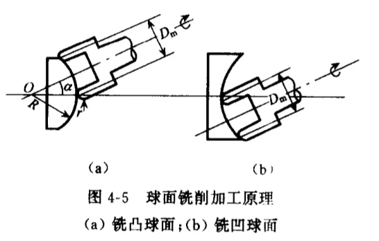

在铣磨机上，采用金刚石磨具成形加工玻璃的工序.
范成法即利用磨轮刃口轨迹包络面成形球面的方法.
这种运动轨迹的包络面就形成球面.
当磨具选定时，中径\(D_m\)和端面圆弧半径\(r\)为定值，调节不同\(\alpha\)角，即可加工不同曲率半径\(R\)的球面.
| 凸透镜 | 凹透镜 |
| $$\sin \alpha = \frac{D_m/2}{R+r}\rightarrow R = \frac{D_m}{2\sin\alpha}-r$$ | $$\sin \alpha = \frac{D_m/2}{R-r}\rightarrow R = \frac{D_m}{2\sin\alpha}+r$$ |
研磨光学玻璃的磨料分为天然磨料和人造磨料两大类.
粒度| 方法 | 粒度号 | 含义 |
| 筛选法 | \(n^\#\) | 一英寸长度上有\(n\)个筛孔 |
| 水选法 | \(Wn\) | 该号微粉主要组成的粒度上限尺寸为\(n\mu m\) |
磨具表面的磨粒在外力作用下脱落的难易程度.
磨具越硬则磨粒越难脱落.
金刚石磨具的浓度在磨具金刚石层内，每立方厘米体积内含有金刚石的质量.
规定每立方厘米中含有\(4.4\)克拉金刚石作为\(100\%\)浓度.
工件转动一周的吃刀量.
冷却液作用冷却、清洗、润滑.
| 常见表面疵病 | |
| 类型 | 产生原因 |
| 菊花纹（细密振纹） | 磨头误差与振动影响. |
| 宽疏菊花纹 | 工件主轴的轴向窜动. |
| 麻点 | 磨轮线速度选择不当、进刀速度与工件转速配合不好. |
| 擦贴环带有缺口 | 光刀时间不够、密封垫圈过厚. |
| 擦贴环带脱空 | 机床工件主轴轴线与磨头轴线不相交. |
| 球面偏心 | 夹具定位面的偏心. |